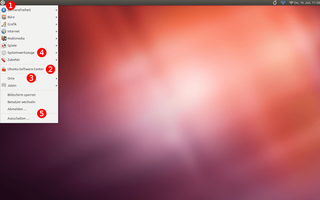
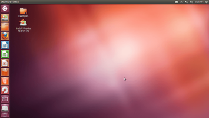

Umstiegshilfe Gnome Unity
Spätestens mit dem 1. Point-Release im Sommer 2012 wurde Nutzern der damals noch aktuellen LTS-Version Ubuntu 10.04 mit GNOME 2 die Aktualisierung auf die neue LTS-Version Ubuntu 12.04 angeboten werden. Manche sind vielleicht auch schon vorher neugierig, wie diese Version aussehen wird. Damit es keinen Frust beim Umstieg von GNOME auf das deutlich andere Unity gibt, soll dieser Artikel als erste Orientierung dienen. Alles Weitere findet sich ausführlich unter Unity.
Wer auf Unity verzichten kann, befolgt die Tipps des Artikels Archiv/GNOME3 Fallback-Modus, um unter Ubuntu 12.04 eine weitgehend optisch ähnlich Desktop-Umgebung mit GNOME wie unter Ubuntu 10.04 zu erhalten.
Von GNOME zu Unity¶
|  |
| GNOME 2 |
|  |
| Unity |
Vom (potentiellen) Umsteiger wird Vertrautheit mit der GNOME-2-Oberfläche vorausgesetzt. Die folgende Punkte entsprechen der Nummerierung im Bildschirmfoto.
| Übersicht | |||
| Nummer | Funktion | GNOME 2 | Unity |
| 1 | Programme | In Gruppen im Menü unter "Anwendungen" zu finden. | (Ubuntusymbol) anwählen und den Anfangsbuchstaben eintippen. Eine Liste der möglichen Programme wird eingeblendet. |
| 2 | Paketverwaltung | "Anwendungen -> Ubuntu Softwarecenter" | Direkt im Unity-Startmenü zu finden als "Software-Center". |
| 3 | Orte | Persönliche Orte (z.B. Homeverzeichnis). | Direkt im Unity-Startmenü zu finden "Persönlicher Ordner". |
| 3 | Suche | "Orte -> Nach Dateien suchen ..." | (Ubuntusymbol) anwählen und den Dateinamen eintippen. |
| 3 | Zuletzt benutzte Dateien | "Orte -> Zuletzt geöffnete Dokumente..." | (Ubuntusymbol) anwählen. Die zuletzt verwendeten Anwendungen werden eingeblendet. |
| 4 | Einstellungen | "Systemwerkzeuge -> Einstellungen" | Direkt im Unity-Startmenü zu finden "Systemeinstellungen". |
| 4 | Ubuntu One | "Systemwerkzeuge -> Einstellungen -> Ubuntu One" | Ein Eintrag ist im Unity-Startmenü hinterlegt. |
| 4 | Systemeinstellungen | "Systemwerkzeuge -> Systemverwaltung" | Direkt im Einstellungen zu finden "Systemeinstellungen". |
| 5 | Abmeldemenü | Die Schaltfläche findet man in der rechten oberen Bildschirmecke. | Identische Position wie in GNOME. |
Panel und Startmenü von Unity¶
Standardmäßig sind in der Menüleiste von Unity am linken Bildschirmrand folgende Punkte vorhanden:
Dateimanager "Persönlicher Ordner"
Geöffnete Anwendungen
eingehängte Geräte und Datenträger
eingelegte CDs oder DVDs
Papierkorb
Weitere Details sind in den Artikeln Unity Startmenü und Unity Menüleiste zu finden.
 Übersichtsartikel
Übersichtsartikel- Erstellt mit Inyoka
-
 2004 – 2017 ubuntuusers.de • Einige Rechte vorbehalten
2004 – 2017 ubuntuusers.de • Einige Rechte vorbehalten
Lizenz • Kontakt • Datenschutz • Impressum • Serverstatus -
Serverhousing gespendet von